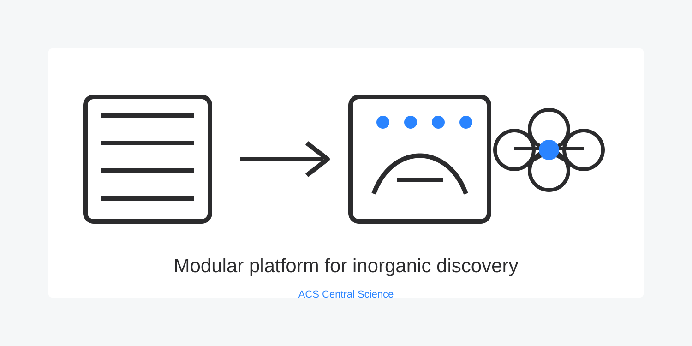

Inorganic cluster discovery often depends on self-assembly and crystallization happening under the right conditions, making brute-force search expensive and hard to reproduce.
This work developed a modular programmable robotic platform for systematic exploration of polyoxometalate chemistry, combining high-throughput reaction execution with inline analysis.
The project connects chemistry knowledge, hardware design, software control, and experimental strategy. It shows that useful automation is not just about moving liquids: it is about designing a platform matched to the scientific search problem.
// Published in ACS Central Science, 2020. Daniel Salley first author.
Source: A Modular Programmable Inorganic Cluster Discovery Robot for the Discovery and Synthesis of Polyoxometalates. Visual prepared for ChemoBotAI from the publication theme.
Back to projects